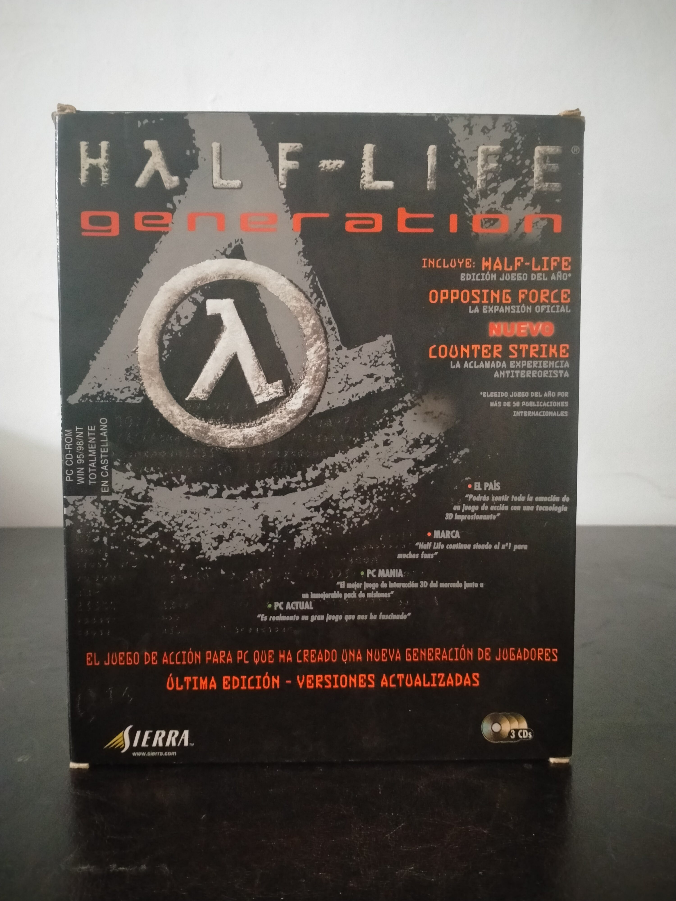

Ficha #000116
Half-Life Generation
Half-Life Generation es una recopilación física para PC publicada por Sierra que reúne el impacto inicial de Half-Life con su expansión oficial Opposing Force y el fenómeno multijugador Counter-Strike, además de Team Fortress Classic como parte del ecosistema competitivo surgido alrededor del motor GoldSrc. Half-Life, desarrollado por Valve, transformó el shooter en primera persona al integrar narrativa continua, secuencias guionizadas sin interrupciones cinematográficas tradicionales, inteligencia artificial avanzada para la época y una ambientación científica de ciencia ficción centrada en Black Mesa. Opposing Force, desarrollado por Gearbox Software, amplía la historia desde la perspectiva de un marine de la HECU, aportando nuevas armas, enemigos y situaciones paralelas al incidente original. Counter-Strike representa uno de los saltos culturales más importantes del PC gaming de finales de los noventa y comienzos de los 2000: nacido como mod, terminó consolidando el shooter táctico competitivo online y anticipando una parte esencial de la cultura de los eSports. Esta edición española en caja grande, distribuida por Havas Interactive España bajo el sello Sierra, tiene especial interés documental porque encapsula en una sola edición comercial la transición entre el FPS narrativo moderno, la expansión oficial tradicional y la explosión de los mods multijugador convertidos en productos comerciales.
- Formato
- Big Box
- Plataforma
- Win95 Win98 WinNT
- Género
- Shooter en primera persona Acción Ciencia ficción Compilación Expansión Multijugador
- Serie
- Todos Big Box
- Desarrollador
- Valve, Gearbox Software, Counter-Strike Team
- Distribuidor
- Sierra, Havas Interactive España S.L.
- EAN
- —
Contenido de la edición
- Caja Big Box
- 3 CD-ROM
- Estuche jewel case doble para CD 1 y CD 2
- Estuche jewel case para CD 3
- Half-Life: Juego del Año
- Half-Life: Opposing Force
- Counter-Strike
- Team Fortress Classic
Preservación
- Protección
- Código o clave
- Formato recomendado
- BIN/CUE
- Jugable en virtualización
- Sí
Preservación recomendada mediante imagen completa de los 3 CD-ROM originales, preferiblemente en BIN/CUE o formato equivalente que documente con precisión la estructura de los discos. Es importante conservar la asociación entre cada disco, su estuche y las claves físicas de la edición sin publicarlas, ya que las versiones retail de Half-Life y sus derivados utilizaban claves de CD para instalación, identificación o juego online en la infraestructura WON de la época. La ejecución virtual es viable en entornos Windows 95/98/NT o mediante capas de compatibilidad, aunque las funciones online originales dependen de servicios históricos ya discontinuados.